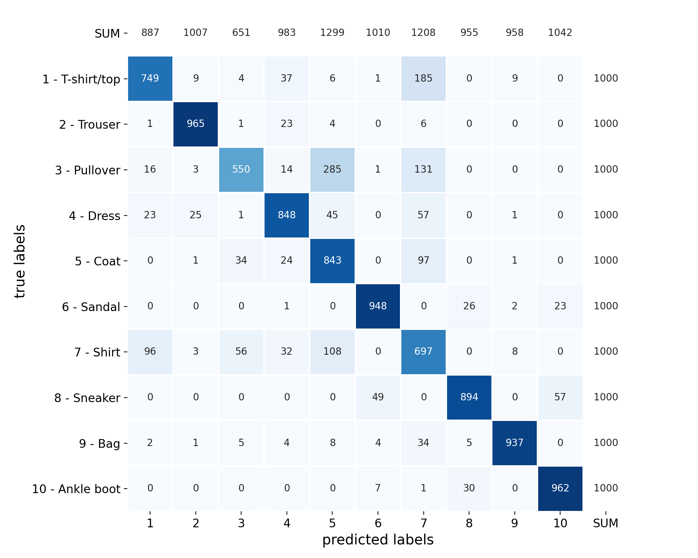
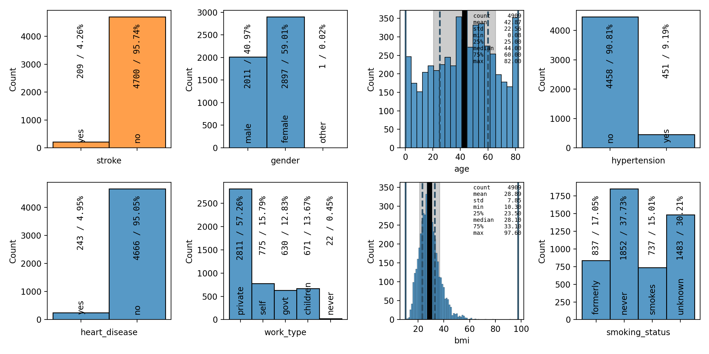

spellbook.plot¶
High-level functions for creating and saving plots
- Functions:
|
Create a pairplot |
|
Parallel coordinates plot |
|
Create a single univariate plot |
|
Create a single bivariate/correlation plot |
|
Create a confusion matrix heatmap plot |
|
Create a grid of univariate plots |
|
Create a grid of bivariate/correlation plots |
|
Save a plot to a file |
Functions¶
pairplot¶
-
spellbook.plot.pairplot(data, xs, ys=None, fontsize=12.0, histplot_args={})[source]¶ Create a pairplot

The plot does not need to contain the same variables or number of variables in x and y. It can be rectangular with any number of rows and any number of columns. The subplots with the same variable in x and y are detected automatically, no matter where they are located in the pairplot, and instead of a 2D/bivariate/correlation plot, the appropriate 1D/univariate distribution is shown. This behaviour allows to split a full and possibly large pairplot for all variables into arbitrarily-sized separate smaller pieces.
The visual representation of the distributions and correlations is chosen automatically depending on the type of random variables (categorical, ordinal, continuous).
- Parameters
data (
pandas.DataFrame) – The dataset to plotxs (
typing.List[str]) – Names of the variables to plot on the x-axisys (
typing.Optional[typing.List[str]]) – Optional. Names of the variables to plot on the y-axes. If not specified, the same variables will be shown on the x-axes and the y-axes.fontsize (
float) – Optional. Baseline fontsize for all elements. This is probably the fontsize thatmediumcorresponds to?histplot_args (
dict) – Optional. Arguments forseaborn.histplot(), which is used to draw the histograms
- Return type
- Returns
The figure containing the grid of plots

parallel_coordinates¶
-
spellbook.plot.parallel_coordinates(data, features, target, categories, fontsize=None, shift=0.3)[source]¶ Parallel coordinates plot

Based on Parallel Coordinates in Matplotlib, but extended to also support categorical variables.
For categorical variables, a random uniform shift is applied to spread the lines in the vicinity of the respective classes. This way, there is an indication for the composition of the datapoints in a particular class/category in terms of the target labels/classes. Furthermore, the shift interval is sized according to the number of datapoints in the respective class/category in order to give an impression for how many datapoints there are in that class.
- Parameters
data (
pandas.DataFrame) – The dataset to plotfeatures (
typing.List[str]) – The names of the feature variablestarget (
str) – The name of the target variablecategories (
typing.Dict[str,typing.Dict[int,str]]) – Dictionary holding the category codes/indices and names as returned byspellbook.input.encode_categories()fontsize (
typing.Optional[float]) – Optional. Baseline fontsize for all elements. This is probably the fontsize thatmediumcorresponds to?shift (
float) – Optional. The half-size of the interval for uniformely shifting categorical variables
- Return type

plot_1D¶
-
spellbook.plot.plot_1D(data, x, xlabel=None, fontsize=12.0, figure_args={}, barchart_args={}, histogram_args={}, histplot_args={}, statsbox_args={})[source]¶ Create a single univariate plot
The type of the variable (categorical or continuous) is determined automatically and either
spellbook.plot1D.barchart()orspellbook.plot1D.histogram()is called.- Parameters
data (
pandas.DataFrame) – The dataset to plotx (
str) – Name of the variable to plotxlabel (
typing.Optional[str]) – Optional. Title of the x-axis. If unspecified or set toNone, the name of the variable, as specified by x, will be used.fontsize (
float) – Optional. Baseline fontsize for all elements. This is probably the fontsize thatmediumcorresponds to?figure_args (
dict) – Optional. Arguments for the creation of thematplotlib.figure.Figurewithmatplotlib.pyplot.figure()barchart_args (
dict) – Optional. Arguments passed on tospellbook.plot1D.barchart()for categorical datahistogram_args (
dict) – Optional. Arguments passed on tospellbook.plot1D.histogram()for continuous datahistplot_args (
dict) – Optional. Arguments forseaborn.histplot(), which is used to draw the plotstatsbox_args (
dict) – Optional. Arguments passed on by spellbook.plot1D.histogram tospellbook.plotutils.statsbox()
- Return type
- Returns
The figure containing the plot
plot_2D¶
-
spellbook.plot.plot_2D(data, x, y, relative=False, fontsize=12.0, figure_args={}, heatmap_args={}, violinplot_args={}, cathist_args={}, scatterplot_args={})[source]¶ Create a single bivariate/correlation plot
The types of the variables (categorical or continuous) are determined automatically and the corresponding 2D plotting function is called:
x is
categoricaland y iscategorical:spellbook.plot2D.heatmap()x is
categoricaland y iscontinuous:spellbook.plot2D.violinplot()x is
continuousand y iscategorical:spellbook.plot2D.categorical_histogram()x is
continuousand y iscontinuous:spellbook.plot2D.scatterplot()
- Parameters
data (
pandas.DataFrame) – The dataset to plotx (
str) – Name of the variable to plot on the x-axisy (
str) – Name of the variable to plot on the y-axisrelative (
bool) –Optional, whether or not the heatmaps drawn with
spellbook.plot2D.heatmap()should be normalised or notTrue: heatmap will be column-normalised (normalisation = norm-col)False: heatmap will be show absolute numbers (normalisation = count)
fontsize (
float) – Optional. Baseline fontsize for all elements. This is probably the fontsize thatmediumcorresponds to?figure_args (
dict) – Optional. Arguments for the creation of thematplotlib.figure.Figurewithmatplotlib.pyplot.figure()heatmap_args (
dict) – Optional. Arguments passed on tospellbook.plot2D.heatmap()for correlations between a categorical variable on the x-axis and a categorical variable on the y-axisviolinplot_args (
dict) – Optional. Arguments passed on tospellbook.plot2D.violinplot()for correlations between a categorical variable on the x-axis and a continuous variable on the y-axiscathist_args (
dict) – Optional. Arguments passed on tospellbook.plot2D.categorical_histogram()for correlations between a continuous variable on the x-axis and a categorical variable on the y-axisscatterplot_args (
dict) – Optional. Arguments passed on tospellbook.plot2D.scatterplot()for correlations between a continuous variable on the x-axis and a continuous variable on the y-axis
- Return type
- Returns
The figure containing the plot
Examples:
simple example
fig = sb.plot.plot_2D(data=data, x='age', y=target, fontsize=14.0)
advanced example
The target variable has two categories and therefore, two histograms will be stacked on top of each other. Via the histogram_args parameter, a list of two dictionaries is passed on to
spellbook.plot2D.categorical_histogram()- one dictionary for each of the two categories. Each one of the dictionaries is then passed on tospellbook.plot1D.histogram().fig = sb.plot.plot_2D( data=data, x='age', y=target, fontsize=11.0, cathist_args = { 'histogram_args': [ dict( show_stats=True, statsbox_args = {'alignment': 'bl'} ), dict( show_stats=True, statsbox_args = { 'y': 0.96, 'text_args': { # RGBA white with 50% alpha/opacity 'backgroundcolor': (1.0, 1.0, 1.0, 0.5) } } ) ] })
plot_confusion_matrix¶
-
spellbook.plot.plot_confusion_matrix(confusion_matrix, class_names, class_ids=None, normalisation='count', crop=True, figsize=(5.8, 5.3), fontsize=None, fontsize_annotations=None)[source]¶ Create a confusion matrix heatmap plot
Both the absolute frequencies as well as the relative frequencies, either normalised by the true labels, the predictedlabels or their combinations, can be shown. The desired behaviour is specified with the parameter
normalisation.- Parameters
confusion_matrix (
tf.Tensor) – The confusion matrixclass_names (
typing.List[str]) – List of the class namesclass_ids (
typing.Optional[typing.List[int]]) – Optional, list of IDs for each target class. These IDs are shown on the x-axis and, together with the class names, on the y-axis.normalisation (
str) –Optional, indicates if the absolute or relative frequencies should be plotted
count: Numbers of datapointsnorm-all: Percentages normalised across all combinations of the true and the predicted classes/labelsnorm-true: Percentages normalised across the true labelsnorm-pred: Percentages normalised across the predicted classes
figsize (
typing.Tuple[float,float]) – Optional, size (width, height) of the figure in inchescrop (
bool) –Plots with normalisation set to
norm-true/norm-preddo not include the SUM row/column, respectively. When crop is set toTrue, the excluded SUM row/column is removed from the heatmap matrix, thus making it occupy a larger portion of the plotFalse, the excluded SUM row/column is kept empty but still included in the heatmap matrix, so as to make each cell appear in the same position as with normalisation set tocountornorm-all
fontsize (
typing.Optional[float]) – Optional. Baseline fontsize for all elements. This is probably the fontsize thatmediumcorresponds to?fontsize_annotations (
typing.Union[str,float,None]) – Optional. Fontsize for the annotations. As specified inmatplotlib.text.Text.set_fontsize().
- Return type
- Returns
The figure containing the plot
See also


{kind=link}
plot_grid_1D¶
-
spellbook.plot.plot_grid_1D(nrows, ncols, data, target=None, features=None, xlabels=None, fontsize=12.0, figure_args={}, stats=True, stats_align=None, binwidths=None, histogram_args={})[source]¶ Create a grid of univariate plots
The type / visual representation of each variable is determined automatically via
spellbook.plotutils.get_data_kind(). Categorical variables are shown as barcharts and continuous variables are shown as univariate / 1D histograms. Summary statistics boxes can be shown for the histograms.- Parameters
nrows (
int) – Number of rowsncols (
int) – Number of columnsdata (
pandas.DataFrame) – The dataset to plottarget (
typing.Optional[str]) – Optional. The name of the target variable. If specified, the target variable will be plotted first and highlighted by plotting it in orange. Either target or features has to be specified.features (
typing.Optional[typing.List[str]]) – Optional. List with the names of the feature variables. If specified, the feature variables will be plotted after the target variable. Either target or features has to be specified.xlabels (
typing.Union[str,typing.List[str],None]) – Optional. The titles of the x-axes. If unspecified or set toNone, the names of the variables, as specified by target and features will be used.fontsize (
float) – Optional. Baseline fontsize for all elements. This is probably the fontsize thatmediumcorresponds to?figure_args (
dict) – Optional. Arguments for the creation of the returnedmatplotlib.figure.Figurewithmatplotlib.pyplot.figure()stats (
typing.Union[bool,typing.List[bool]]) – Optional. Bool or list of bools that indicate if statistics boxes are shown in each plotstats_align (
typing.Union[str,typing.List[str],None]) – Optional. List of alignment strings, one for each plotbinwidths (
typing.Union[float,typing.List[float],None]) – Optional. Float or list of floats that indicate the binwidth in each plothistogram_args (
dict) – Optional. Dictionary of parameters and values that are passed tospellbook.plot1D.histogram()
- Return type
- Returns
Figure containing the grid of plots
Example
import pandas as pd import spellbook as sb data = pd.read_csv('dataset.csv') plot_vars = sb.plot.plot_grid_1D(2, 4, data, target='z', features=['x', 'y'], stats=True, stats_align=['tl', 'br', 'tr'])
{kind=link}
plot_grid_2D¶
-
spellbook.plot.plot_grid_2D(nrows, ncols, data, xs, ys, relative=False, fontsize=12.0, figure_args={}, heatmap_args={}, violinplot_args={}, cathist_args={}, scatterplot_args={})[source]¶ Create a grid of bivariate/correlation plots
- Parameters
nrows (
int) – Number of rowsncols (
int) – Number of columnsdata (
pandas.DataFrame) – The dataset to plotxs (
typing.List[str]) – Names of the variables to plot on the x-axisys (
typing.List[str]) – Names of the variables to plot on the y-axisrelative (
bool) –Optional. Whether or not the heatmaps drawn with
spellbook.plot2D.heatmap()should be normalised or notTrue: heatmap will be column-normalised (normalisation = norm-col)False: heatmap will be show absolute numbers (normalisation = count)
fontsize (
float) – Optional. Baseline fontsize for all elements. This is probably the fontsize thatmediumcorresponds to?figure_args (
dict) – Optional. Arguments for the creation of thematplotlib.figure.Figurewithmatplotlib.pyplot.figure()heatmap_args (
dict) – Optional. Arguments passed on tospellbook.plot2D.heatmap()for correlations between a categorical variable on the x-axis and a categorical variable on the y-axisviolinplot_args (
dict) – Optional. Arguments passed on tospellbook.plot2D.violinplot()for correlations between a categorical variable on the x-axis and a continuous variable on the y-axiscathist_args (
dict) – Optional. Arguments passed on tospellbook.plot2D.categorical_histogram()for correlations between a continuous variable on the x-axis and a categorical variable on the y-axisscatterplot_args (
dict) – Optional. Arguments passed on tospellbook.plot2D.scatterplot()for correlations between a continuous variable on the x-axis and a continuous variable on the y-axis
- Return type
- Returns
The figure containing the grid of plot